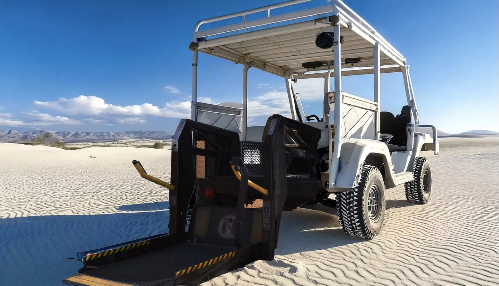
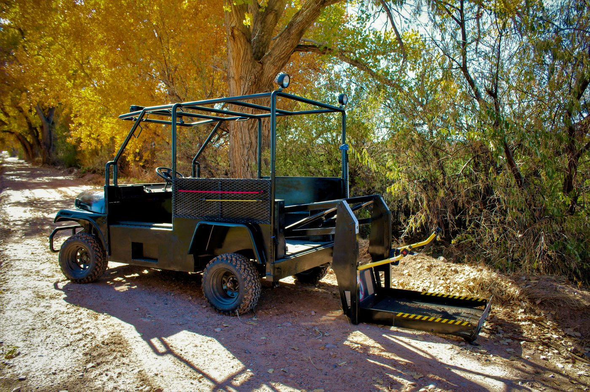
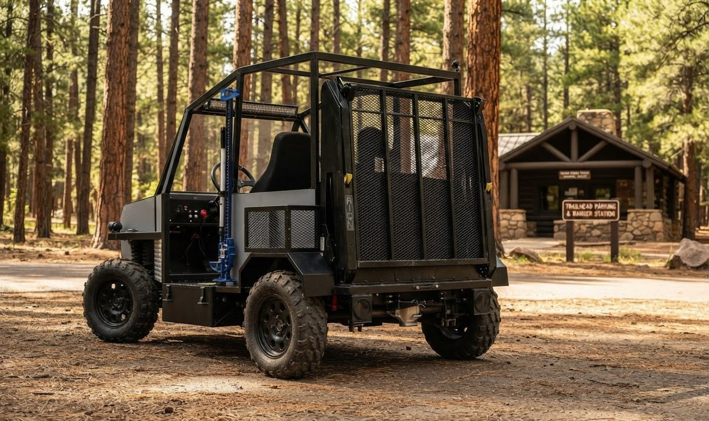
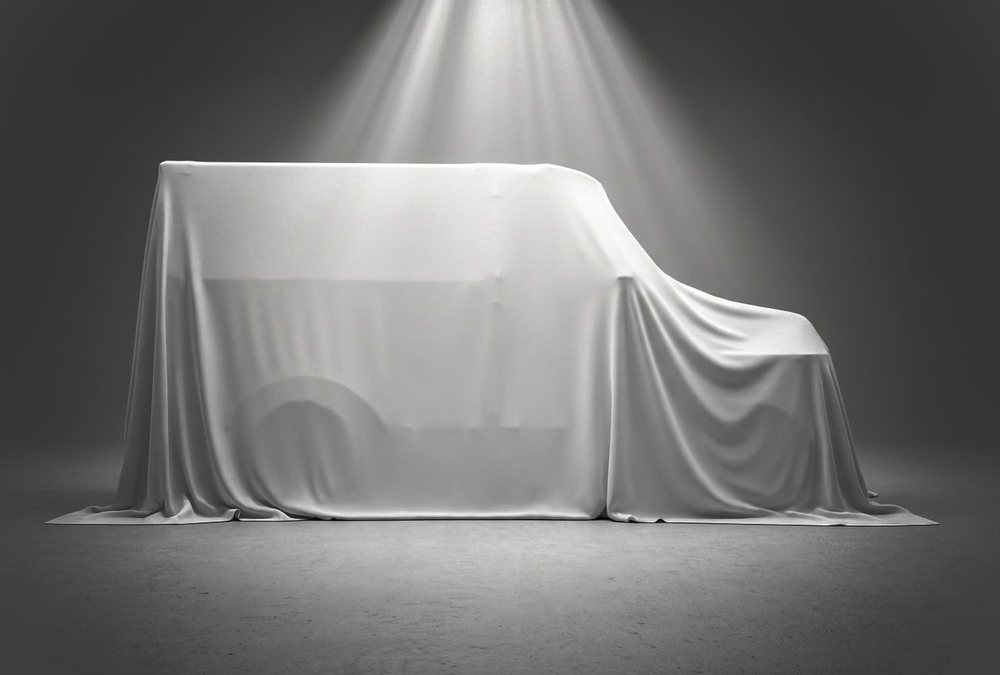

Since 1987
It began with a cousin, a hunting trip, and a mail Jeep that could be boarded straight from the curb. Four decades later, the Enabler 2.1 is hand-welded in Albuquerque, New Mexico, and, in 2027 goes out to its first customers.
Our founder and his cousin Buddy hunted together for years. Buddy had been in a car accident that left him with lasting injuries, and getting him to the field was always the hard part. So our founder customized a retired mail Jeep, to be boarded straight from the curb. It may not have been fancy, but it worked.
Thirty years is a long time to hold onto an idea. When it was finally built, we called it the Buddy Buggy. Rear wheelchair lift, all-wheel electric drive, room to roll straight in from the chair. The lift was the part that mattered: getting in took nobody's help.
COVID closed the shop and the frame sat waiting. Nobody else built anything like it, so we went back to work. All-wheel drive, all-steel, a self-loading rear lift—the driver works alone. The lift also comes off in four bolts, so the vehicle is never tied to one person: anyone in the family or on the crew can drive it.
Every change on the 2.1 came from watching the 2.0 operate. Bigger mirrors and more cameras, because a driver who can't turn to look behind shouldn't have to guess what's back there, least of all while towing. Bigger wheels for a gentler, and higher, ride. A roof that keeps out the sun and rain. And jump seats: the 2.0 carried just its driver, the 2.1 now carries three.
Forty years after the mail Jeep, the totally redesigned Enabler 2.1 goes out to its first customers. Every one is welded, wired and finished by hand in Albuquerque. We're proud of each one that leaves the shop.
Through the Years
Three vehicles, one stubborn idea: board from the chair, drive it alone, and get to where the work is.



